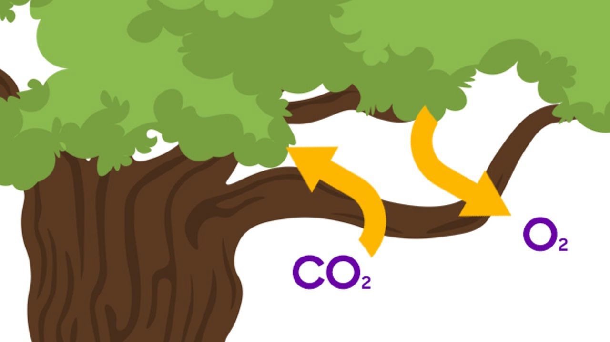

Trees are long-lived, woody perennial plants characterized by a single main stem or trunk supporting branches and leaves. They have a root system that anchors them and absorbs water and nutrients, and they thrive through photosynthesis, converting sunlight, water, and carbon dioxide into energy. Trees provide essential resources like oxygen, food, and shelter for wildlife, are crucial for regulating the environment, and are an important source of various commercial products and medicines
Trees play a vital role in producing oxygen and mitigating climate change. Through photosynthesis, they absorb carbon dioxide, a major greenhouse gas, and release oxygen back into the atmosphere. This process helps to reduce the overall concentration of carbon dioxide, which is essential for combating global warming. Additionally, trees provide shade and cool the air through transpiration, further helping to regulate temperatures in their surroundings.
Trees are a fundamental component of many ecosystems, providing habitat and food for a diverse range of species. They contribute to soil health by preventing erosion, maintaining moisture levels, and supporting a variety of organisms within their root systems. The presence of trees in an ecosystem enhances biodiversity and promotes a balanced environment.
Trees play a crucial role in soil conservation by preventing erosion and maintaining soil fertility. Their root systems help to anchor the soil, reducing the risk of landslides and promoting water infiltration. Additionally, fallen leaves and organic matter from trees contribute to the nutrient content of the soil, supporting healthy plant growth.
Trees are essential for maintaining the water cycle and ensuring a stable water balance in the environment. They absorb and store rainwater, releasing it slowly into the atmosphere through transpiration. This process helps to regulate humidity levels and contributes to local rainfall patterns, benefiting both the trees themselves and the surrounding ecosystem.
Trees contribute to human health and well-being in numerous ways. They improve air quality by filtering pollutants and providing oxygen, which is essential for respiratory health. Additionally, green spaces with trees promote physical activity, reduce stress, and enhance mental well-being, making them vital for healthy communities.
The economic value of trees is significant, as they provide timber, non-timber forest products, and recreational opportunities. Sustainable management of forest resources can support local economies while preserving the environment. Trees also contribute to ecosystem services, such as carbon sequestration and water purification, which have long-term benefits for society.
In conclusion, trees are indispensable to our planet's health and our well-being. Their contributions to oxygen production, climate regulation, biodiversity, soil conservation, water balance, and human health underscore the need for their protection and sustainable management. By valuing and preserving trees, we can ensure a healthier, more sustainable future for all living beings.